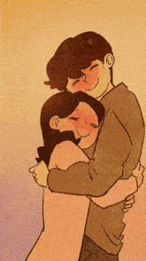

Good boy, obediente como me gusta, ahora continúa bajando
Llevo un tiempo pensando cómo hacer esto, eres alguien muy especial para mí y no pienso darte un trato ordinario, así que tuve que pensar y pensar
Pero no te preocupes mi niño lindo, soy un genio sugoi y por fin pensé en algo que creí que te gustaría y con suerte te haría reír un rato jeje nice
Eto... Oni chan eres alguien sugoi que me hace sentir ureshi cuando estoy contigo y muy kanashi cuando no estás
Es increíble que puedo ser yo mismo sin limitarme a nada y no trates de salir huyendo de mi sigma aura, no cualquiera puede tolerarla y suelo tener que esconderla a menudo con la gente que convivo
Puedo ser serio o puedo ser baka estando contigo
Baaaaaaaaaaaaaaaaaaaka
Me gustas mucho Daikinen, por más que te lo digo no siento que sea suficiente, me gustas mucho mucho y quiero estar contigo
Daaaaaaaaaaaaaaai Suki!
Quiero pasar el resto de mis días contigo, sabes? Motto motto motto, necesito más de tí
Por favor sé mi kareshi, prometo que dedicaré mi cuerpo, alma y toda mi existencia a hacerte el chico más feliz del mundo pero antes de que me des una respuesta, sigue bajando, my good boy
Aceptarás ser mi kareshi, onii chan?

Ureshiii, ahora no te soltaré nunca:3 mwaaah
Oioioioioi cómo que no baka! Te voy a follar, bueno es hora del plan B (brujería y magia oscura)